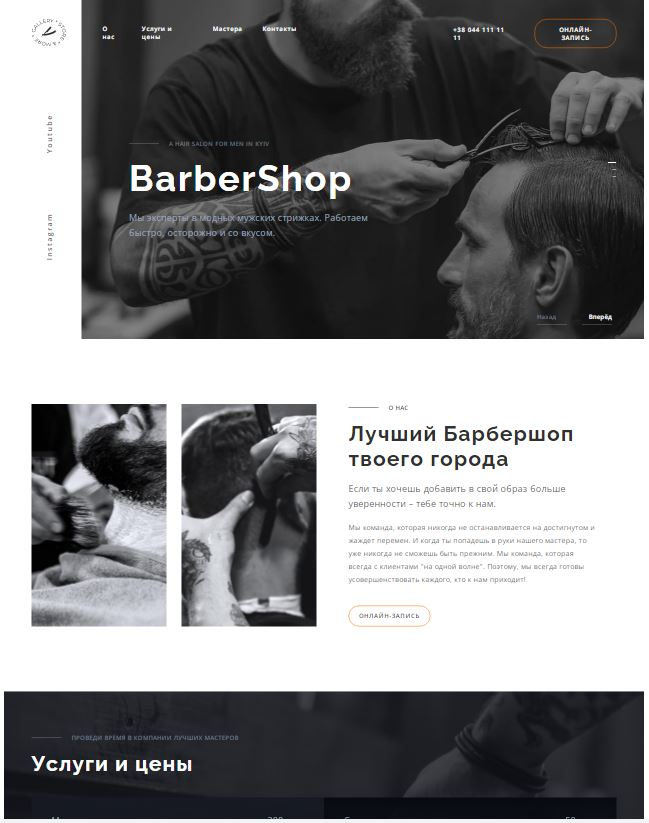

Портфоліо
-
1. Сайт WebStudio
Використані технології: HTML, SASS, Javascript.
Опис: кросбраузерний та адаптивний сайт для веб-студії. Добре виглядає при мобільній версії 480 px, планшетній - 768 px та на ПК - 1600 px. Додала Javascript для слайдера, відкриття та закриття модального вікна, меню навігації на мобільній версії та фільтру проектів на вкладці "Портфоліо". Браузерліст налаштований на "> 0.5%, Firefox 20, Safari 3.1, Opera 10.1, Chrome 20"
Посилання на сайт Посилання на код
-
2. Сайт ЗЕNИK
Використані технології: HTML, SASS, Javascript.
Опис: кросбраузерний та адаптивний сайт для мобільної та компьютерної версії. Використала Javascript для згортання та розгортання відповідей на запитання, зміни оформлення. Браузерліст налаштований на "> 0.5%, Firefox 20, Safari 3.1, Opera 10.1, Chrome 20".
Посилання на сайт Посилання на код -
3. Сайт Телефонна книга
Використані технології: HTML, React.js, React Redux, React Router, CSS modules.
Опис: даний додаток підключений до бек-енду, дозволяє зареєструвати та авторизувати користувача, зберігати дані телефонної книги кожного окремого юзера. Ці дані можна додавати та видаляти.
Посилання на сайт Посилання на код -
4. Сайт з пошуку фільмів
Використані технології: HTML, React.js, React Router, CSS modules.
Опис: даний додаток підключений до бек-енду, допомагає отримати список трендових фільмів на сьогодні та інформацію по окремому фільму. Здійснює пошук за ключовим словом.
Посилання на сайт Посилання на код
Самостійне виконання
-
1. Сайт Барбершоп
Використані технології: HTML, SASS, Javascript, Parcel
Опис: адаптивний сайт для барбершопу. Була лідером команди, написала секцію "Послуги та ціни", правила код учасників проекту, складала разом частини сайту, створювала робочу атмосферу в команді.
Посилання на сайт Посилання на код
Командна робота
Portfolio
-
1. WebStudio
Technologies used: HTML, SASS, Javascript.
Description: cross-browser and adaptive website for web studio. Looks good on the 480 px mobile version, 768 px on the tablet version and 1600 px on the laptop. Added Javascript for the slider, opening and closing the modal window, navigation menu on the mobile version and filter of projects on the "Portfolio" tab. The browser list is set to "> 0.5%, Firefox 20, Safari 3.1, Opera 10.1, Chrome 20".
Site link Code link
-
2. ЗЕNИK
Technologies used: HTML, SASS, Javascript.
Description: cross-browser and adaptive site for mobile and laptop versions. Used Javascript to hide and show answers to questions, change the design. The browser list is set to "> 0.5%, Firefox 20, Safari 3.1, Opera 10.1, Chrome 20".
Site link Code link -
3. Phonebook
Technologies used: HTML, React.js, React Redux, React Router, CSS modules.
Description: This application is connected to the back-end, allows you to register and authorize the user, save the phone book data of each individual user. This data can be added and deleted.
Site link Code link -
4. Movie search site
Technologies used: HTML, React.js, CSS modules.
Description: This application is connected to the back-end, helps to get a list of trending movies for today and information about the movie. Searches by keyword.
Site link Code link
Self-execution
Views:
-
1. Barbershop
Technologies used: HTML, SASS, Javascript, Parcel
Description: Adaptive site for barbershop. I was the teamleader, wrote the section "Services and prices", fixed the code of the project members, put together parts of the project, created a working atmosphere for the team.
Site link Code link
Teamwork